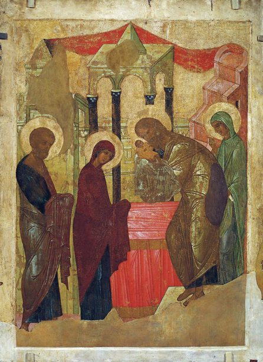

Andrei Rublev,1360 - 1430,Byzantine Art,Russian,"Andrei Rublev (Russian: Андре́й Рублёв, IPA: [ɐnˈdrʲej rʊˈblʲɵf], also transliterated as Andrey Rublyov; born in the 1360s, died 29 January 1427 or 1430, or 17 October 1428 in Moscow) is considered to be one of the greatest medieval Russian painters of Orthodox icons and frescos.",http://en.wikipedia.org/wiki/Andrei_Rublev,99
